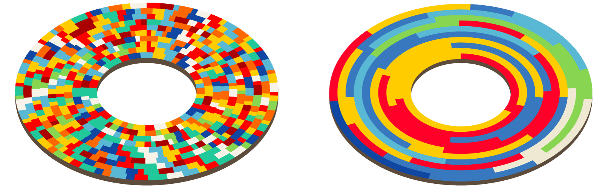
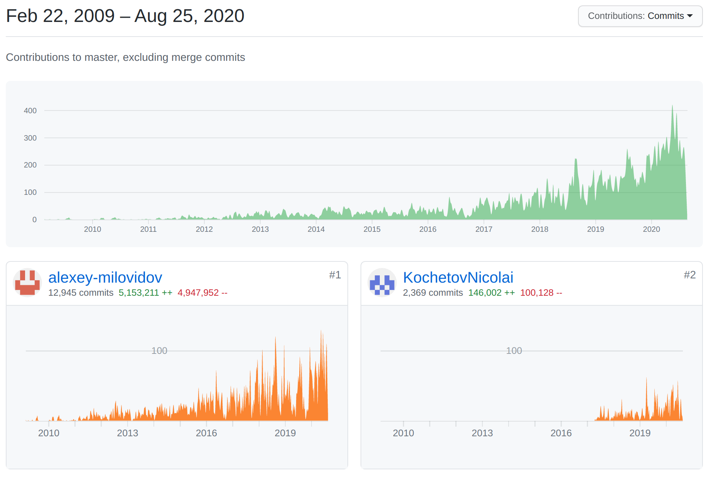
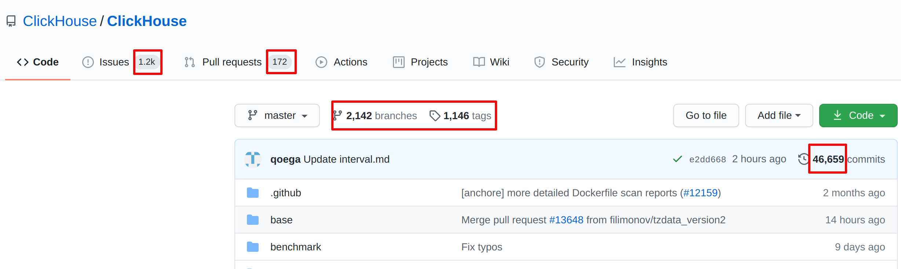
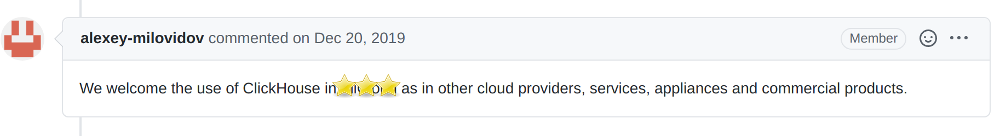
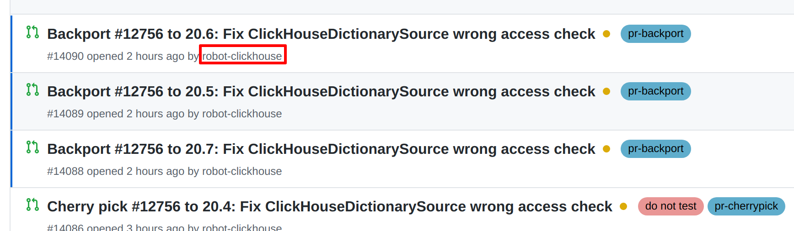
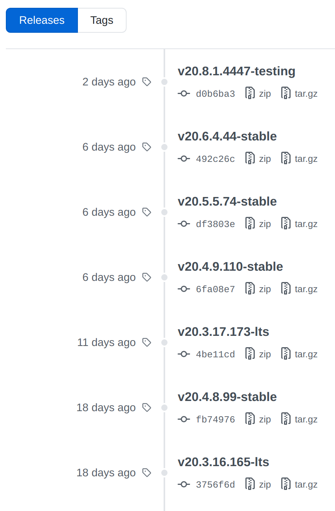
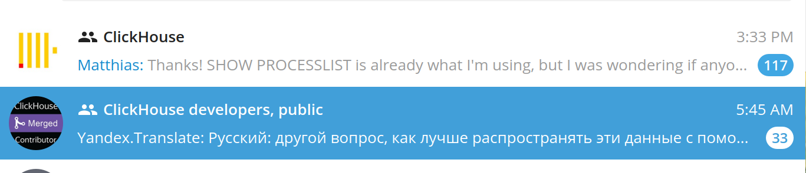
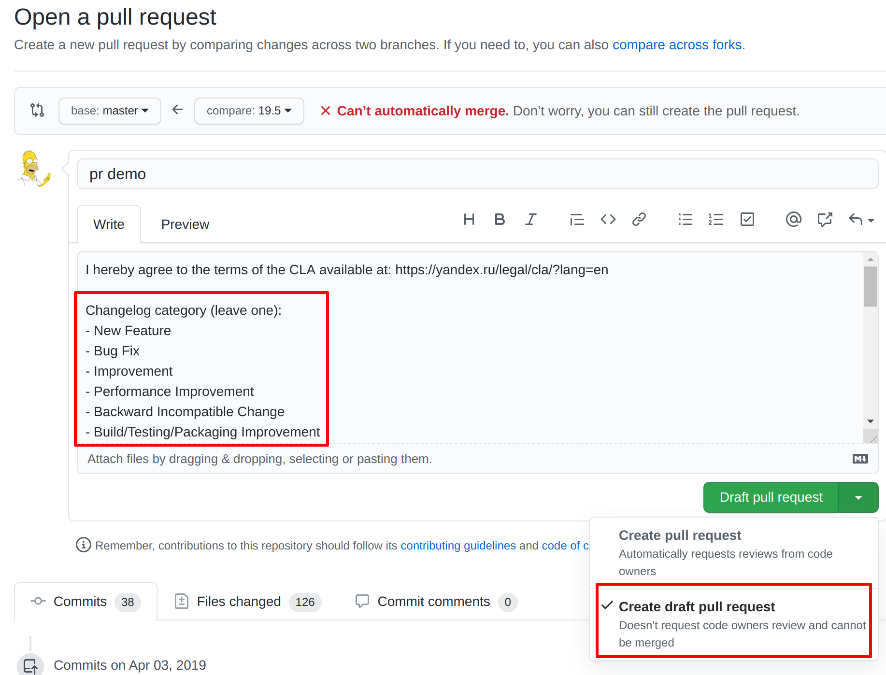

ClickHouse 社区与开发
源码可以阅读，社区需要参与
大家都应该知道的 ClickHouse 社区
2020.08
目录
||| ClickHouse 社区如何运作
||| 如何基于 ClickHouse 打造商业产品
||| 如何紧跟 ClickHouse 社区发展
||| 如何为 ClickHouse 社区做贡献
About us
||| @zhang2014 @TCeason @BohuTANG
||| QingCloud ClickHouse Team
||| ClickHouse 社区持续、最大贡献者
||| JSONB、CustomHTTP、MaterializeMySQL、MySQL相关、优化器等
||| ChronusDB: 基于 ClickHouse 打造的云时序数据库
||| ClickHouse on QingCloud: 基于 ClickHouse 打造的云数据仓库
MySQL (MyISAM), 2008-2011
||| Data Locality 问题

Metrage, 2010-2015
||| Metrage: Metrica + Aggregated statistics
||| 不同维度聚合问题
||| 需要一个真正的列存数据库
为什么要列存？
||| row-oriented 工作模式

为什么要列存？
||| column-oriented 工作模式

ClickHouse, 2010-？
||| 2012 年生产使用
||| 2014 年 Metrica 全部替换完成
||| 2016 年 ClickHouse 开源
ClickHouse, CK16 宣言
||| ClickHouse must solve actual problem
||| ClickHouse must be the default choice
as an open-source analytical DBMS
||| The first and the only right solution
for appropriate use cases
||| And everyone should be aware of it

ClickHouse 开源社区
||| 社区异常活跃
||| Alexey，阿列克谢·米洛维多夫(译)

ClickHouse 开源社区
||| 500+ 贡献者
||| 官方 ~12 人，承担开发、CI、文档、社区

商业产品化
||| Apache-2.0 License
||| 比较开放

版本选择
||| stable 版本: 每年 10+ 次发布(推荐)
||| lts 版本: 每年 2 次发布，1 年支持周期
版本选择(2020.08.26)
||| stable: 20.6.4.44
||| lts: 20.3.9.70
版本维修
||| (stable/lts)版本怎么 backport bugfix ...？
版本维修
||| Cherry Pick
||| ClickHouse Robot

版本维修
||| 定期同步到某个 tag
||| 适合商业化公司

版本升级
||| 迭代太快
||| 如何确定新版本兼容性？
||| query_log
||| SELECT ... FROM REMOTE .. INTO
时区
||| 莫斯科比北京慢 5 小时
||| 北京时间上午跟踪，莫斯科时间下午起床
电报群
||| ClickHouse, 对外开放
||| ClickHouse developers，需要邀请

电报群
||| 俄语为主，机器人实时英文翻译

如何为 ClickHouse社区做贡献
||| typo
||| 文档完善、翻译
||| 功能开发
||| bug 修复
||| 社区推广
Pull Request
||| 默认同意代码许可协议(CLA)
||| 选择分类
||| 建议选择 Draft 模式

Pull Request
||| [can be tested] 标签
||| github CI 开跑
||| Reviewer
||| Approved
||| Merged
||| 进入testing分支